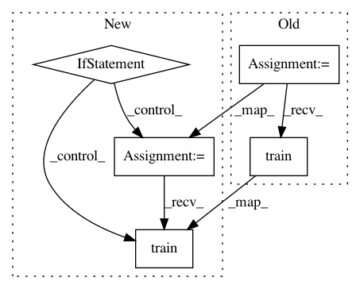

165756cc19a19db0e75c128ccc97eff3579af1c3,examples/nas/darts/search.py,,,#,17
Before Change
optim = torch.optim.SGD(model.parameters(), 0.025, momentum=0.9, weight_decay=3.0E-4)
lr_scheduler = torch.optim.lr_scheduler.CosineAnnealingLR(optim, args.epochs, eta_min=0.001)
trainer = DartsTrainer(model,
loss=criterion,
metrics=lambda output, target: accuracy(output, target, topk=(1,)),
optimizer=optim,
num_epochs=args.epochs,
dataset_train=dataset_train,
dataset_valid=dataset_valid,
batch_size=args.batch_size,
log_frequency=args.log_frequency,
unrolled=args.unrolled,
callbacks=[LRSchedulerCallback(lr_scheduler), ArchitectureCheckpoint("./checkpoints")])
if args.visualization:
trainer.enable_visualization()
trainer.train()
After Change
optim = torch.optim.SGD(model.parameters(), 0.025, momentum=0.9, weight_decay=3.0E-4)
lr_scheduler = torch.optim.lr_scheduler.CosineAnnealingLR(optim, args.epochs, eta_min=0.001)
if args.v1:
from nni.algorithms.nas.pytorch.darts import DartsTrainer
trainer = DartsTrainer(model,
loss=criterion,
metrics=lambda output, target: accuracy(output, target, topk=(1,)),
optimizer=optim,
num_epochs=args.epochs,
dataset_train=dataset_train,
dataset_valid=dataset_valid,
batch_size=args.batch_size,
log_frequency=args.log_frequency,
unrolled=args.unrolled,
callbacks=[LRSchedulerCallback(lr_scheduler), ArchitectureCheckpoint("./checkpoints")])
if args.visualization:
trainer.enable_visualization()
trainer.train()
else:
from nni.retiarii.trainer.pytorch import DartsTrainer
trainer = DartsTrainer(
model=model,
In pattern: SUPERPATTERN
Frequency: 3
Non-data size: 5
Instances
Project Name: microsoft/nni
Commit Name: 165756cc19a19db0e75c128ccc97eff3579af1c3
Time: 2020-12-05
Author: Yuge.Zhang@microsoft.com
File Name: examples/nas/darts/search.py
Class Name:
Method Name:
Project Name: microsoft/nni
Commit Name: 165756cc19a19db0e75c128ccc97eff3579af1c3
Time: 2020-12-05
Author: Yuge.Zhang@microsoft.com
File Name: examples/nas/enas/search.py
Class Name:
Method Name:
Project Name: ClimbsRocks/auto_ml
Commit Name: 090b20a6dc31cb152505523e5f48c87f6142278c
Time: 2016-08-24
Author: ClimbsBytes@gmail.com
File Name: auto_ml/predictor.py
Class Name: Predictor
Method Name: train